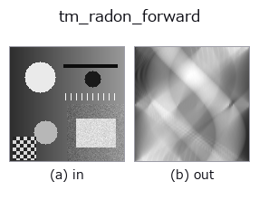

tomography op• Data kinds: image → image
• Call: fullseye.apply(img, "tm_radon_forward", a=0.5, b=0.5) (the 2-D model is one image plus two scalar knobs a,b∈[0,1])

*The figure is the actual output on a synthetic 128×128 input. Left: input, right: output. Point clouds are drawn as a top-down scatter (brightness = z), 1-D series as a line plot, volumes as the maximum-intensity projection along z, videos as the middle frame, complex images as magnitude; return values that are not pictures are shown as the values themselves.*
Sweeping knob a (0.1 / 0.5 / 0.9, the other knob at its default):
▸ tm_radon_forward: knob a sweep (docs site)
Sweeping knob b (0.1 / 0.5 / 0.9, the other knob at its default):
▸ tm_radon_forward: knob b sweep (docs site)
On other images (synthetic scene / photo / coins. Top row: inputs, bottom row: their outputs. Knobs at default):
▸ tm_radon_forward: other inputs (docs site)
*The 4th column is a colour (H,W,3) input. This op handles colour without crossing channels (it does not convolve the colour channel as a third spatial axis).*
Forward Radon projection: treat `v as a slice image and integrate it along parallel rays to build a sinogram (rows = angles, cols = detector), refit to the original HxW. a sets how many angles are acquired (n = round(H*a) clamped to 8..360 -- the sparse-view knob), b sets the angular span (span = 180*min(1, 0.5+b) deg: b < 0.5 is limited-angle CT, b >= 0.5 -- including the default b = 0.5 -- is the full [0,180) span that tm_fbp_reconstruct / tm_sart_reconstruct / tm_backproject_unfiltered assume, so the natural chain forward -> inverse round-trips at default knobs). Uses skimage.transform.radon` when available, else the NumPy rotate-and-sum Radon transform.
• gallery2d_physics_alife_3d family guide
• Sample-data catalog (download URLs / licences) — 2-D uses skimage.data (BSD/public domain) plus synthetic images; 3-D lists download URLs for real data sources (Stanford, PDS, …).
• Operator provenance and references — the sources of the research/methods this op family came from.
• The canonical algorithm (author, year) and its uses are named in the family usage guide above.
The program below has been verified to run (same input as the figure). In Studio's help this block becomes buttons that load and run it on the spot.
tm_radon_forward 0.50 0.50
▸ Load this pipeline · Load & run
• gallery2d_physics_alife_3d — py -3.11 examples/gallery2d_physics_alife_3d.py
image as input)identity · gaussian · mean_box · bilateral · unsharp · median · min_filter · max_filter
tomography)tm_fbp_reconstruct · tm_sart_reconstruct · tm_backproject_unfiltered · tm_sinogram_denoise
*Provenance: ops.py — 2D operator registry. This per-op note is generated by tools/opdocs.py md (do not hand-edit).*
© 2026 Kazufumi Furuse — Fullseye operator documentation. Licensed under Apache-2.0.
{kind=link}
{kind=link}
{kind=link}